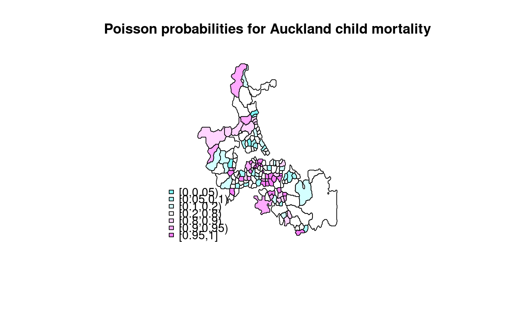

Probability mapping for rates
probmap.RdThe function returns a data frame of rates for counts in populations at risk with crude rates, expected counts of cases, relative risks, and Poisson probabilities.
probmap(n, x, row.names=NULL, alternative="less")
Arguments
| n | a numeric vector of counts of cases |
|---|---|
| x | a numeric vector of populations at risk |
| row.names | row names passed through to output data frame |
| alternative | default “less”, may be set to “greater” |
Details
The function returns a data frame, from which rates may be mapped after class intervals have been chosen. The class intervals used in the examples are mostly taken from the referenced source.
Value
raw (crude) rates
expected counts of cases assuming global rate
relative risks: ratio of observed and expected counts of cases multiplied by 100
Poisson probability map values: probablility of getting a more ``extreme'' count than actually observed - one-tailed, default alternative observed “less” than expected
References
Bailey T, Gatrell A (1995) Interactive Spatial Data Analysis, Harlow: Longman, pp. 300--303.
See also
Examples
if (require(rgdal, quietly=TRUE)) { example(auckland, package="spData") res <- probmap(auckland$M77_85, 9*auckland$Und5_81) rt <- sum(auckland$M77_85)/sum(9*auckland$Und5_81) ppois_pmap <- numeric(length(auckland$Und5_81)) for (i in seq(along=ppois_pmap)) { ppois_pmap[i] <- poisson.test(auckland$M77_85[i], r=rt, T=(9*auckland$Und5_81[i]), alternative="less")$p.value } all.equal(ppois_pmap, res$pmap) if (require(classInt, quietly=TRUE)) { cI <- classIntervals(res$raw*1000, style="fixed", fixedBreaks=c(-Inf,2,2.5,3,3.5,Inf)) fcI <- findColours(cI, pal=grey(6:2/7)) plot(auckland, col=fcI) legend("bottomleft", fill=attr(fcI, "palette"), legend=names(attr(fcI, "table")), bty="n") title(main="Crude (raw) estimates of infant mortality per 1000 per year") cI <- classIntervals(res$relRisk*1000, style="fixed", fixedBreaks=c(-Inf,47,83,118,154,190,Inf)) fcI <- findColours(cI, pal=cm.colors(6)) plot(auckland, col=fcI) legend("bottomleft", fill=attr(fcI, "palette"), legend=names(attr(fcI, "table")), bty="n") title(main="Standardised mortality ratios for Auckland child deaths") cI <- classIntervals(res$pmap, style="fixed", fixedBreaks=c(0,0.05,0.1,0.2,0.8,0.9,0.95,1)) fcI <- findColours(cI, pal=cm.colors(7)) plot(auckland, col=fcI) legend("bottomleft", fill=attr(fcI, "palette"), legend=names(attr(fcI, "table")), bty="n") title(main="Poisson probabilities for Auckland child mortality") } }#> #> acklnd> if (requireNamespace("rgdal", quietly = TRUE)) { #> acklnd+ library(rgdal) #> acklnd+ auckland <- readOGR(system.file("shapes/auckland.shp", package="spData")[1]) #> acklnd+ plot(auckland) #> acklnd+ if (requireNamespace("spdep", quietly = TRUE)) { #> acklnd+ library(spdep) #> acklnd+ auckland.nb <- poly2nb(auckland) #> acklnd+ } #> acklnd+ } #> OGR data source with driver: ESRI Shapefile #> Source: "/Library/Frameworks/R.framework/Versions/3.4/Resources/library/spData/shapes/auckland.shp", layer: "auckland" #> with 167 features #> It has 4 fields